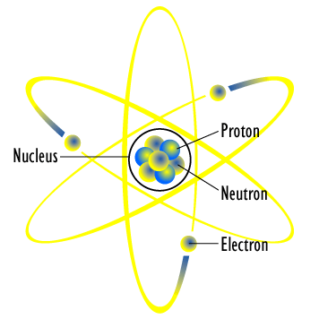
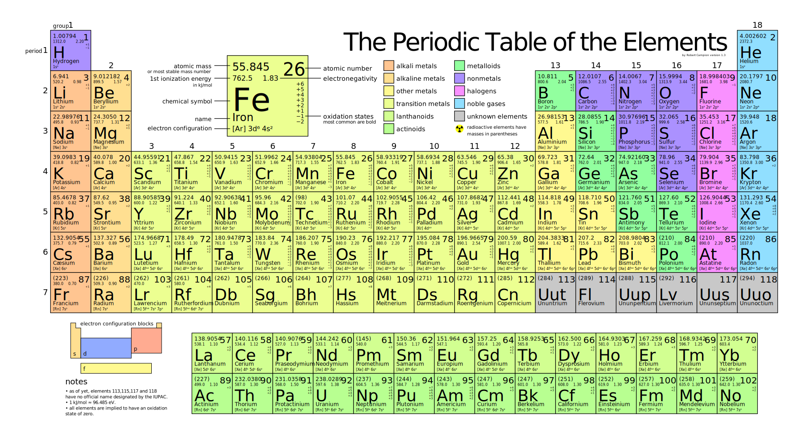

“The universe is composed of two elements: the atoms and the void in which they exist and move.”
- Democritus
To put it simply, atoms are the building block of our world. To help you visualize this, consider the philosophical question proposed by Democritus around 460BC: Imagine you had the world's sharpest knife. If you were to take any object and cut it in half using that knife, then in half again, and again, would you eventually reach a point in which the object was physically incapable of being cut?"
According to Democritus, the answer to this question was yes, eventually you would reach a point in which the object was too small to cut. He called that object the atom: the smallest piece of matter that could not be cut any further. That means that if you were to take anything around you i.e the water you're drinking, the chair you're sitting on, or the air you're breathing, and cut it up until you couldn't cut it anymore, you would get an atom.
With the development of modern science, we now know that atoms are not the smallest unit of matter. In fact, atoms are given different properties based off their own building blocks. Let's start off by talking about these building blocks.
Before we begin explaining what exactly these things are, we have to examine a bit of math. The following equation is known as Coulomb's Law and explains what happens when two charged objects are placed together.
You don't have to worry about what charge is or what the different variables mean at this moment. The important thing to take away from this equation is that objects with the same charge, +/+ and -/-, will want to move away from each other, whereas objects with the opposite charge, +/-, will be attracted to each other. This will come in handy when understanding the behavior of protons and electrons.
A proton is just a positively charged subatomic (smaller than atomic) particle, whereas an electron is the negatively charged analog. A neutron is simply neutral. All atoms are created by different combinations of these three subatomic particles. Through various experiments, we now know that the structure of an atom to be a tight center of protons and neutrons with a cloud of electrons floating around. As described by Coulomb's law, the negatively charged electrons are attracted to the positively charged protons.
One interesting thing to note is that the radius of the nucleus, containing all of the protons and neutrons of the atom, is only around 0.0000000000001 meters, while containing 99.99% of the atom's mass. In comparison, that would be like having a pea that had a mass of 250 million tons! While pictures may portray the nucleus as taking up a good portion of the atom's entire size, in reality the nucleus only takes up around 0.001% of the size. This is like having a football field as the atom, with a mosquito at the center as the nucleus! Only in this case, the mosquito weighs more than 100,000 times the entire stadium and everything inside it!
Skim through any chemistry textbook or sit in any chemistry lecture and you'll hear or see the word "electron" a couple dozen times and "proton" a handful. Scientists refer to electrons and protons so frequently because the properties of matter depend heavily on the behavior of electrons and protons! The differences in behavior of atoms can be attributed solely to the difference in numbers of protons, electrons, and neutrons. For example, atoms with 7 "valence" electrons tend to react violently, whereas atoms with 8 valence electrons tend to be gases and not react at all. We can actually predict whether a specific material will be reactive with something else, if it'll be dangerous for consumption, or any other number of properties just based off how we expect the electrons to interact!
The number of protons that an atom has defines what element it is. The number of neutrons and electrons vary for all elements, but the number of protons stay constant. For example, all atoms with 3 protons are lithium atoms, and all atoms with 8 protons are oxygen. You cannot have an oxygen atom with 3 protons. You can, however, have an oxygen atom with 6 electrons, or 7 electrons, or even 8 electrons. It will still be an oxygen atom because it has 6 protons.
Chances are if you've taken a chemistry class at any point in your life, you've seen or heard of the periodic table. The periodic table is simply a list of the known elements in our world. The distinction between each of the elements is solely based off the number of protons: Boron cannot have the same number of protons as oxygen, because then it would be oxygen! As we'll see later on, the periodic table is the basis of all chemistry: chemical properties and behavior can be predicted simply by understanding the periodic table!
A lot of what we went over in this post is summarized in an atomic theory proposed by John Dalton. The theory says the following things:
1. Everything is made up of small indivisible and indestructible units called atoms.
2. All atoms of a given element are identical.
3. All compounds are combinations of atoms in specific whole number ratios.
4. Chemical reactions are just rearrangements of atoms.
We've gone over the first 2 parts so far. Part 1 says that atoms make up everything, from the air that we breath to the food that we eat. The 2nd part says that every atom of any element are identical i.e a molecule of nitrogen is the same mass and will have the same properties no matter where the molecule is. Parts 3 & 4 are things that we'll go over in the next section.
The 3 subatomic particles are protons, neutrons, and electrons.
Atoms are distinguished by the number of protons it has.
Dalton's Atomic Theory provides a general summary of how atoms behave.
1. Dalton's Atomic Theory is wrong.
While Dalton's Atomic Theory works for most cases, it is in some ways an outdated theory. We now know that certain postulates of the theory are incorrect. Postulate #1 states the atoms are indivisible and indestructible. With the recent advancements in technology and science, we've been able to identify even the materials that make up atoms- atoms are very much divisible. Postulate #2 states that all atoms of a given element are identical. We'll soon learn that some atoms of an element can have have a different number of neutrons or electrons, which change the mass and chemical properties. Additionally, postulate #3 is only correct for simple molecules. For complicated molecules such as `C_(12)H_(22)O_(11)`, the ratio is clearly not a whole number.
Dalton's theory provides a backbone of atomic structure that we can expand on. For this reason, it's important to understand the postulates when first learning about atoms.
2. Why can't you trust atoms?
Because they make up everything!